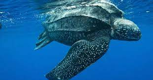
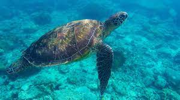
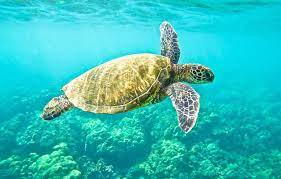
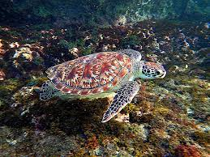
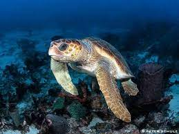

Leatherback turtles are named for their shell, which is leather-like rather than hard, like other turtles.
They are the largest sea turtle species and also one of the most migratory, crossing both the Atlantic and Pacific Oceans. Pacific leatherbacks migrate from nesting beaches in the Coral Triangle all the way to the California coast to feed on the abundant jellyfish every summer and fall.Although their distribution is wide, numbers of leatherback turtles have seriously declined during the last century as a result of intense egg collection and fisheries bycatch. Globally, leatherback status according to IUCN is listed as Vulnerable, but many subpopulations (such as in the Pacific and Southwest Atlantic) are Critically Endangered.
The leatherback turtles are also called Dermochelys coriacea, and can again between 600 to 1500 pounds in their lifetime while growing 55 to 63 inches long.
The name for this sea turtle is tied to the color of its shell—an olive green hue. They are currently the most abundant of all sea turtles. Their vulnerable status comes from the fact that they nest in a very small number of places, and therefore any disturbance to even one nest beach could have huge repercussions on the entire population.
the olive riddley turtle is a vulnerable species of turtles that are scientifically called Lepidochelys olivacea. they weigh between 75 pounds and 110 pounds and grow to be between 24 to 28 inches.

The Hawksbill turtle scientific name Eretmochelys imbricata Hawksbills are named for their narrow, pointed beak. They also have a distinctive pattern of overlapping scales on their shells that form a serrated-look on the edges. These colored and patterned shells make them highly-valuable and commonly sold as "tortoiseshell" in markets..
Hawksbills are found mainly throughout the world's tropical oceans, predominantly in coral reefs. They feed mainly on sponges by using their narrow pointed beaks to extract them from crevices on the reef, but also eat sea anemones and jellyfish. Sea turtles are the living representatives of a group of reptiles that has existed on Earth and travelled our seas for the last 100 million years. They are a fundamental link in marine ecosystems and help maintain the health of coral reefs and sea grass beds
The green turtle is one of the largest sea turtles and the only herbivore among the different species. Green turtles are in fact named for the greenish color of their cartilage and fat, not their shells. In the Eastern Pacific, a group of green turtles that have darker shells are called black turtles by the local community. Green turtles are found mainly in tropical and subtropical waters. Like other sea turtles, they migrate long distances between feeding grounds and the beaches from where they hatched. Classified as endangered, green turtles are threatened by overharvesting of their eggs, hunting of adults, being caught in fishing gear and loss of nesting beach sites.
the scientific name for the green turtle is Chelonia mydas. it is an endangered species that can grow between 150 to 400 pounds and 31 to 47 inches in length.

Loggerhead turtles are named for their large heads that support powerful jaw muscles, allowing them to crush hard-shelled prey like clams and sea urchins. They are less likely to be hunted for their meat or shell compared to other sea turtles. Bycatch, the accidental capture of marine animals in fishing gear, is a serious problem for loggerhead turtles because they frequently come in contact with fisheries
Loggerheads are the most common turtle in the Mediterranean, nesting on beaches from Greece and Turkey to Israel and Libya. Many of their nesting beaches are under threat from tourism development. Sea turtles are the living representatives of a group of reptiles that has existed on Earth and travelled our seas for the last 100 million years. They are a fundamental link in marine ecosystems and help maintain the health of coral reefs and sea grass beds.
the loggerhead turtle is scientifically knows as Caretta caretta and weighs between 175 and 400 pound and grows between 33 and 44 inches in length.
| COMMON NAMES | Leatherback turtle | Olive ridley sea turtle | Green turtle | Hawksbill Turtle | Loggerhead turtle |
|---|---|---|---|---|---|
| SCIENTIFIC NAME | Dermochelys coriacea | Lepidochelys olivacea | Chelonia mydas | Eretmochelys imbricata | Caretta caretta |
| IMAGES |  |  |  |  |  |